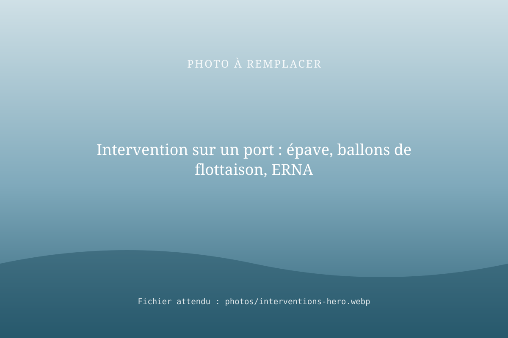
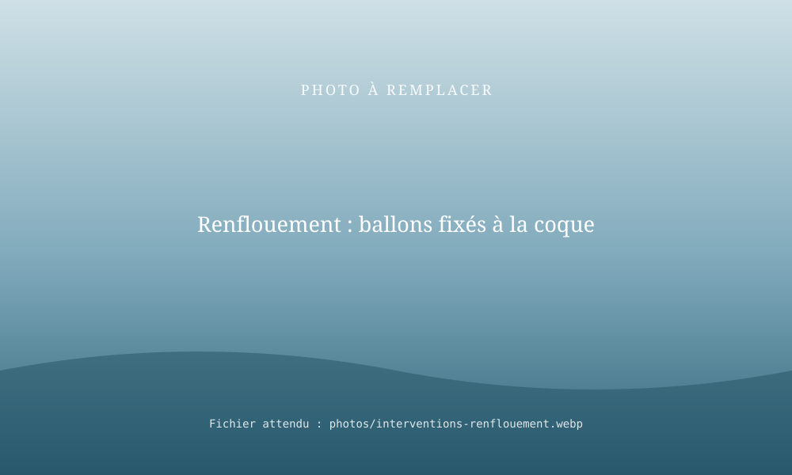
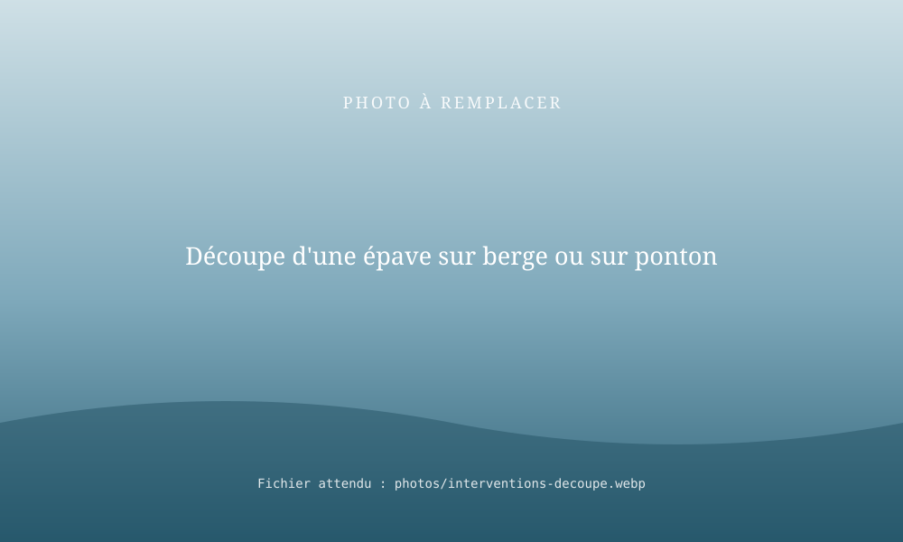

Interventions techniques sur l'eau : renflouement et découpe de bateaux
RivesEnRêves libère et sécurise les plans d'eau des ports, des sites et des chantiers : renflouement de bateaux à l'aide de ballons de flottaison, découpe de bateaux et évacuation d'épaves. Des opérations que nous avons déjà réalisées.

Trois objectifs pour le gestionnaire de site
Libérer un plan d'eau
Récupérer des places à quai et un bassin utilisable, encombré par des bateaux abandonnés.
Évacuer une épave
Remonter, déplacer puis découper les épaves qui gênent la navigation ou dégradent le site.
Sécuriser un site
Réduire les risques de pollution, d'accident et d'image liés aux bateaux coulés ou en péril.
Renflouement aux ballons de flottaison
Référence : renflouement d'un bateau à l'aide de ballons de flottaison. La méthode est progressive et contrôlée : diagnostic, pose des ballons, gonflage, retour en surface, pompage et mise en sécurité.
Découpe de bateaux
Référence : découpe de bateaux : déconstruction de bateaux en fin de vie, évacuation de coques et d'épaves. La découpe peut se faire à flot, sur berge ou après sortie de l'eau, selon l'accès et l'état du bateau.
Pour déplacer les bateaux ou le matériel, nous mobilisons notre pousseur ERNA.


Questions fréquentes
Comment renflouer un bateau coulé sur un site portuaire ?
Après diagnostic (position, profondeur, risques de pollution), des ballons de flottaison sont fixés au bateau puis gonflés progressivement pour le ramener en surface. Il est ensuite pompé, mis en sécurité, puis évacué ou découpé. RivesEnRêves a déjà réalisé ce type d'opération.
Qui peut enlever une épave abandonnée dans un port ?
Le gestionnaire du port engage les démarches prévues par la réglementation, puis fait appel à un intervenant pour le renflouement, le déplacement et la découpe. RivesEnRêves réalise ces opérations techniques.
Intervenez-vous en urgence ?
Contactez-nous en précisant le lieu et la situation : nous étudions la possibilité d'intervenir dans les délais requis. [À COMPLÉTER : délai d'intervention habituel].
Un plan d'eau à libérer ?
Décrivez le site, le nombre et l'état des bateaux concernés : nous vous proposons une méthode et un devis.